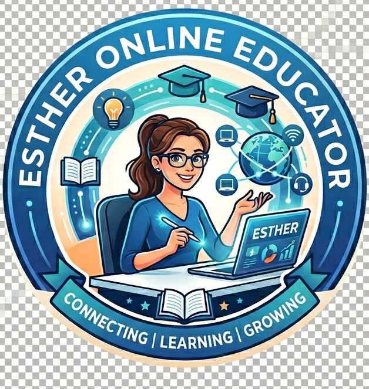

Esther Online Educators is a team of qualified and experienced educators led by the founder Esther. Our team aims at demystifying complex math and science subjects for high school and university students by providing premium, highly interactive, and flexible online education. We aim to bridge the gap between abstract concepts and tangible understanding through innovative digital tools, personalized learning paths, and dedicated mentorship —ultimately empowering students to achieve top academic grades, build foundational confidence, and deliver measurable peace of mind to their parents.

To simplify complex scientific and mathematical concepts through interactive, personalized, and flexible online learning. We bridge the gap between abstract theory and real-world understanding, empowering high school, college, and exam-prep students to achieve their academic goals while giving parents measurable peace of mind.
To become the premier all-in-one digital academy for Science education, recognized for transforming academic anxiety into confidence. We envision a future where high-quality, engaging coaching, 3D interactive tools, and a collaborative student community are accessible to learners anywhere, anytime
We are located in Kampala, Pioneers building Room L54 and L55